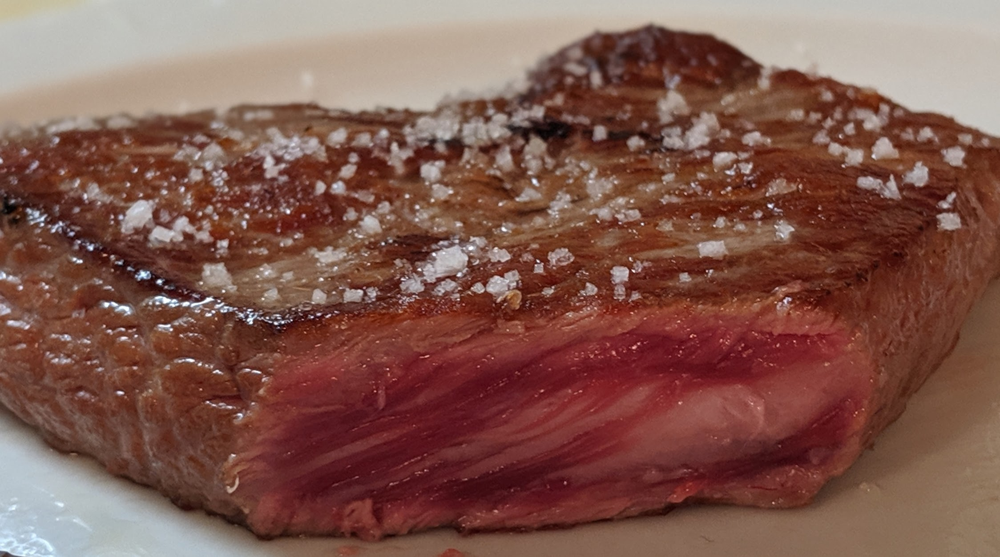

I eat only animal-based foods. 1
Why?
In early 2013 a licensed medical doctor impetuously prescribed me enough antibiotics 2 so as to mess up my gut (and possibly skin) microbiome. This lead to what was then a mild folliculitis to become severe chronic folliculitis with chronic seborrhoeic dermatitis following suit.
I suffered with this condition for over 4 years, and saw plethora of licensed dermatologists (who knew naught but to prescribe ever more antibiotics 3 ; one even had me do low-dose Accutane). Then, just within two weeks of going on the carnivore diet (beef, salt and pepper) my symptoms reduced to about 95%. Over the next years I was to reintroduce several plant foods; and everytime I do, my symptoms would come back in vengeance.
Takeaway: don’t blindly trust the doctors and nutritionists, especially when it comes to the topic of antibiotics and diet. Although harbouring no ill-will, they can’t help but regurgitate what they had been taught (with bias) in medical school … and quackery and misinformation is not very uncommon in medicine.
Is it safe?
Contrary to popular belief and medical “knowledge,” the carnivore diet (especially with offal) provides all the necessary nutrients and is safe. Meat is nutritionally complete food, and some indigenous groups have traditionally eaten an all-meat diet.
One ought to pay lip service to general medical wisdom and any dominant nutrition ideology as they are laced with an anti-meat bias 4 using problematic epidemiological studies where, depending on the researcher’s nutritional bias, one can establish any food item to be problematic.
Resources
- Healing reports
- Getting started
-
Science
- Georgia Ede
- The Carnivore Code (book)
- Paleolithic Ketogenic Diet (PKD): a variation of the carnivore diet—high fat, organ meat, without dairy or spices—designed to heal intestinal permeability and certain medical conditions.
Some resources on the pro-plant / anti-meat bias:
-
But what has for the most part been overlooked is that Katz and THI and many of its council members have numerous industry ties themselves. The difference is that their ties are primarily with companies and organizations that stand to profit if people eat less red meat and a more plant-based diet. Unlike the beef industry, these entities are surrounded by an aura of health and wellness, although that isn’t necessarily evidence-based.
-
Plant-based to meat-based - a dietitian’s story
A nutritionist reflects back on how she fell prey to propaganda, much like others in medicine:
Looking back I think there were many factors that shaped my previously held stance on nutrition. I believe my education set me up to be susceptible to a plant-based diet. I was educated that too much red meat is not good. I was educated to value fruits and vegetables over meat. With this mind set, I was predisposed into believing red meat was bad for me and that the only animal protein (if any) I should eat was chicken and fish. I became further disgusted by red meat through documentaries and books with a vegan agenda. Red meat causes climate change, red meat decreases our life expectancy, red meat is morally bad. This pushed me further away from red meat and meat in general. I became more focused on this ideology of health rather than listening to my own body. Without me even realizing it, I began to shape my identity around a plant-based diet. It was really hard for me to break up with this idea of what I thought was healthy and it took me months of self-education to open up my eyes.
-
The Global Influence of the Seventh-Day Adventist Church on Diet
The emphasis on health ministry within the Seventh-day Adventist (SDA) movement led to the development of sanitariums in mid-nineteenth century America. These facilities, the most notable being in Battle Creek, Michigan, initiated the development of vegetarian foods, such as breakfast cereals and analogue meats. The SDA Church still operates a handful of food production facilities around the world. The first Battle Creek Sanitarium dietitian was co-founder of the American Dietetics Association which ultimately advocated a vegetarian diet. The SDA Church established hundreds of hospitals, colleges, and secondary schools and tens of thousands of churches around the world, all promoting a vegetarian diet. As part of the ‘health message,’ diet continues to be an important aspect of the church’s evangelistic efforts. In addition to promoting a vegetarian diet and abstinence from alcohol, the SDA church has also invested resources in demonstrating the health benefits of these practices through research. Much of that research has been conducted at Loma Linda University in southern California, where there have been three prospective cohort studies conducted over 50 years. The present study, Adventist Health Study-2, enrolled 96,194 Adventists throughout North America in 2003–2004 with funding from the National Institutes of Health. Adventist Health Studies have demonstrated that a vegetarian diet is associated with longer life and better health.
-
Dr. David M Klurfeld’s report of his experience with a WHO working group:
- [Dr. David M Klurfeld] was on the World Health Organization working group to decide if meat causes cancer in 2015 with a bunch of vegetarians and vegans and says it was the most frustrating professional experience of his life
- There were 22 scientists - half of which were epidemiologists
- They claimed they used 800 studies but they actually only used 18
- There was a group of people that were strongly against the vote
- He thinks a number of the people made up their minds before they even arrived
-
The Place of Meat in Dietary Policy: An Exploration of the Animal/Plant Divide (Twitter):
The animal/plant divide in dietary policy is a cultural construct that emerged in the Anglosphere during the 19thC.
The animal/plant divide in the post-truth era:
Dietary policies, mass media, and activists increasingly portray plants as mostly beneficial and animal source foods (ASFs) as mostly harmful. Yet, both sides of this poorly informative plant/animal binary represent heterogeneous food groups, which can be either benign or harmful from an ethical, environmental, or health perspective. It is not helpful to base policies on such simplistic categorization, which derives from reductionist approaches to nutrition, distortions by journalists, societal anxieties, and various forms of bias.